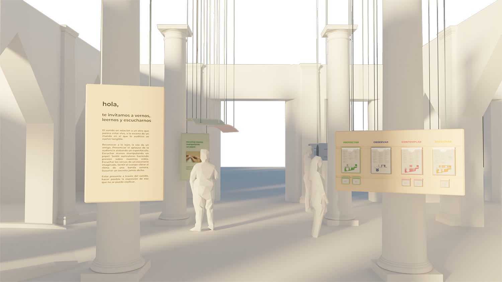
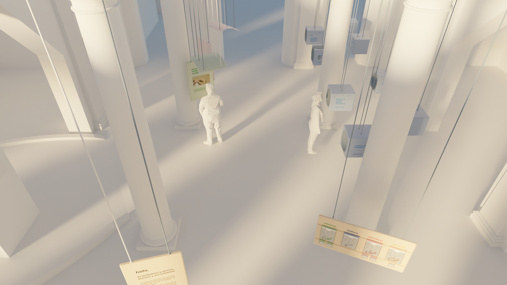
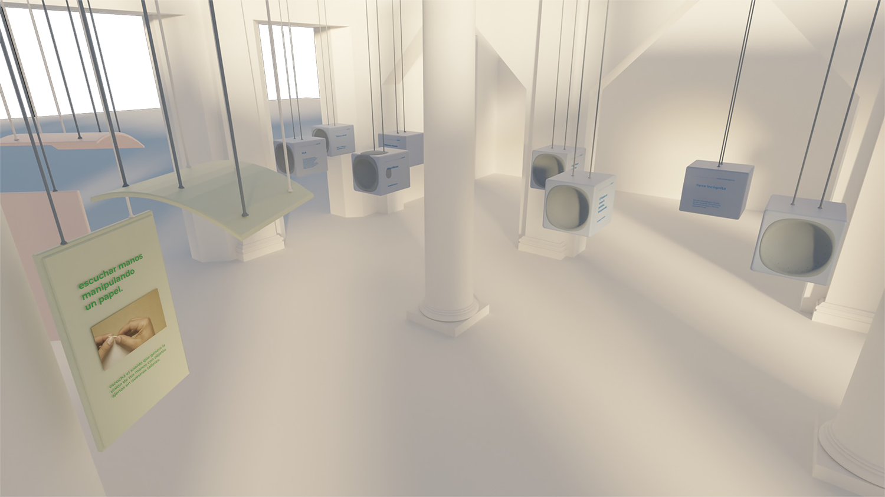
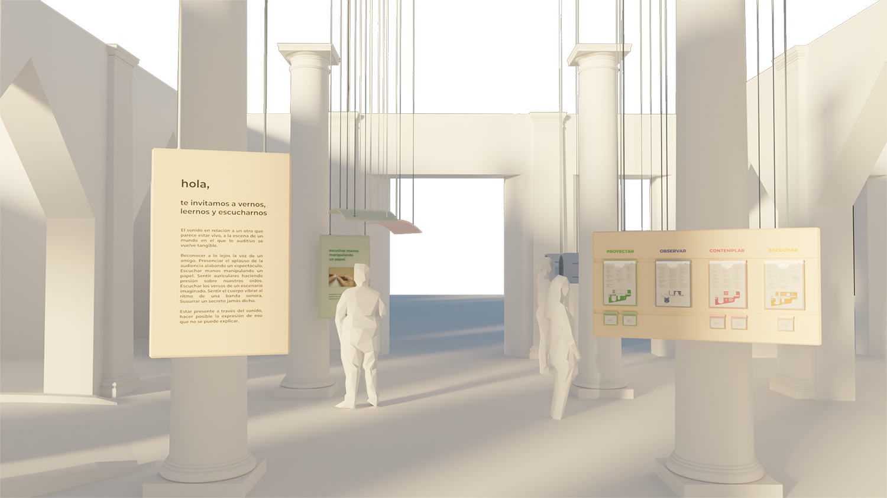
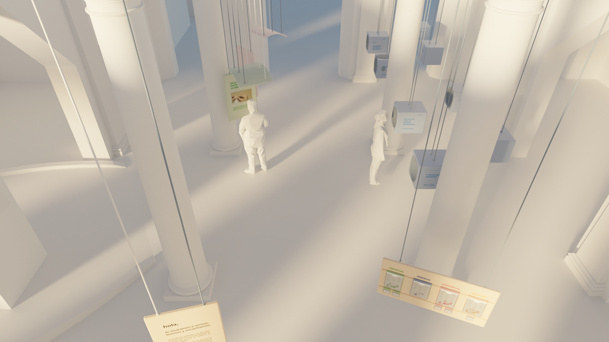
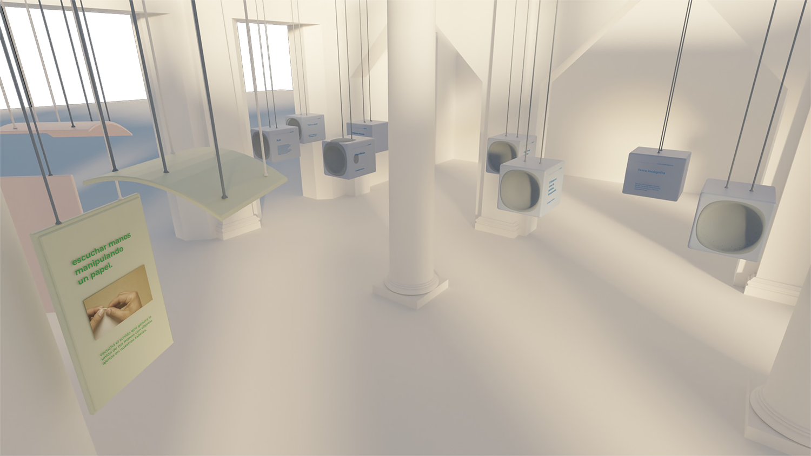

Diseño 3D de intervención en el Centro Cultural Recoleta. La intención es generar una comunicación inmersiva y sincrónica entre los visitantes a través del sonido, haciendo posible una nueva forma de percibirlo.
Trabajo en conjunto con Candela García Sindes y Natalia Spezza.